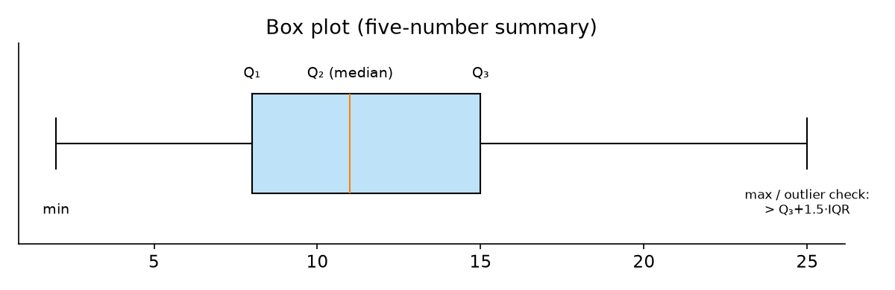
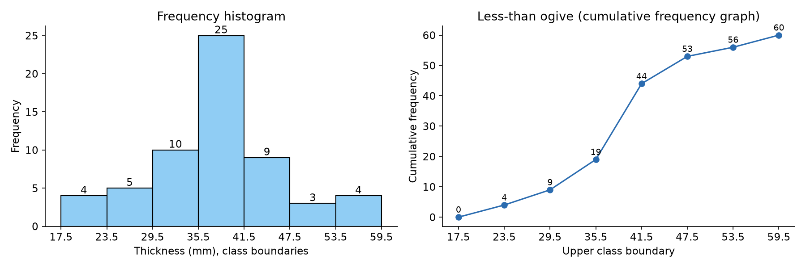
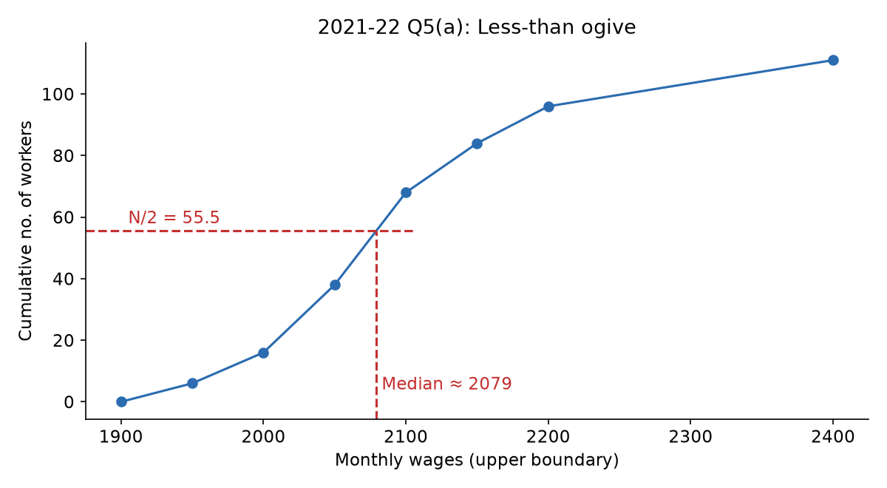

Why this matters for the TF. A table-and-graph question appears every year.
2023-24 asked how to make a stem-and-leaf plot (Q5a) and to interpret a scatter plot (Q5b). 2022-23 asked for a Sturges’ rule table, histogram and ogive from 60 raw values (Q5b), and a stem-and-leaf plot with median, mode and range (Q6b). 2021-22 asked for an ogive with the median and a count in an interval (Q5a), and for class limits and marks (Q5b-i).
The 2021-22 questions are solved below. The newer two papers are in TF 2023-24 Solutions and TF 2022-23 Solutions, and the practice problems below are built in exactly their shape.
Core tools (memorize)
Memorize
Sturges’ rule — use when asked “how many classes”:
K=1+3.322log10N
Class width — round up so that the largest value fits:
h≈KLargest−Smallest
Class boundaries (integer data) — use to draw histograms and ogives:
boundary=limit∓0.5
Class mark — use as the x value of a class:
mark=2lower limit+upper limit
Width = difference of consecutive lower boundaries.
Median from grouped data — use to verify an ogive reading:
Median=L+fN/2−F×h
Quartiles and percentiles — same formula, only the position changes:
Q1:4NQ3:43NPk:100kN
L = lower boundary of the class holding that position, F = cumulative frequency before it, f = its frequency, h = its width.
Less-than ogive — plot cumulative frequency against the upper boundary, starting at (first lower boundary, 0).
Theory the TF actually asks
Stem-and-leaf plot (2023-24 Q5a, 10 marks)
Exam answer: Stem-and-leaf plot
A stem-and-leaf plot displays quantitative data by splitting each value into a stem (the leading digit or digits) and a leaf (the last digit).
Stems are written once in a column in increasing order. The leaves of all values with that stem are written in a row beside it, in increasing order.
It looks like a histogram turned on its side, but it keeps every original value. So the exact median, mode and range can be read, and the shape (symmetry, skewness, gaps, outliers) is visible.
How to create it.
Step 1. Choose the split: for two-digit data the tens digit is the stem and the units digit the leaf; for data like 17.4 the integer part is the stem and the decimal digit the leaf.
Step 2. Write all stems from smallest to largest, including empty ones.
Step 3. Write each leaf next to its stem.
Step 4. Arrange each row’s leaves in increasing order.
A scatter plot is a graph of paired data (x,y) in which each pair is one point. The explanatory variable goes on the x-axis and the response on the y-axis.
It shows whether a relationship exists, and its:
Direction — points rising = positive, falling = negative.
Form — straight-line or curved.
Strength — tight band = strong, wide cloud = weak.
It also reveals outliers. It is the first step before computing correlation or fitting a regression line (S6 Correlation and Regression).
When you interpret a plot in the exam, write three things: the direction, the strength, and what it means in the story. Support it with r if you can.
Remember that a curved pattern can give r≈0 even when the variables are strongly related.
Other graphs (one line each if they come up):
A histogram has touching bars over class boundaries (height = frequency).
A frequency polygon joins frequencies plotted at class marks.
A bar chart has separated bars for categories.
A pie chart uses angles
angle=Nf×360∘
A box plot shows the five-number summary (min, Q1, median, Q3, max). Outliers lie beyond
Q1−1.5IQRorQ3+1.5IQR

Problem types you will face
Type 1 — Class limits, boundaries and class marks
Recognise it: you are told where classes start and how wide they are, or given limits, and asked for boundaries or marks.
Recipe: for integer data, lower limit = lower boundary + 0.5 and upper limit = upper boundary − 0.5. The mark is the midpoint. Each next class adds the width.
Past TF 2021-22 Q5(b)(i): class limits and class marks
Given. 34 integer observations from 201 to 337; seven classes of width 20, the first beginning at 199.5.
Step 1 — boundaries. 199.5 is a boundary, so the boundaries are:
Check. 200 to 339 contains the smallest value 201 and the largest value 337, so all 34 observations fit.
Practice 1 (TF style)
Weights recorded to one decimal place are grouped as 40.0–44.9, 45.0–49.9, 50.0–54.9. Find the boundaries, marks and width.
Step 1 — boundaries. The gap between 44.9 and 45.0 is 0.1, so boundaries are limits ∓0.05:
39.95–44.95, 44.95–49.95, 49.95–54.95.
Step 2 — marks.
240.0+44.9=42.45
then 47.45 and 52.45.
Step 3 — width.
44.95−39.95=5
Type 2 — Build a frequency table from raw data with Sturges’ rule
Recognise it: a block of raw numbers and “use Sturges’ rule” or “construct a frequency table”.
Recipe: find N, min, max. Compute K and h (round h up so that min +Kh passes the max). Write the classes, tally, check the total equals N. Add boundaries, marks and cumulative frequency.
Practice 2 (TF style, like 2022-23 Q5b)
The response times (ms) of 40 server requests are:
52, 61, 47, 58, 66, 73, 55, 49, 62, 68, 57, 44, 71, 59, 63, 50, 54, 77, 65, 60, 48, 56, 69, 62, 53, 58, 64, 41, 75, 61, 57, 67, 51, 63, 59, 70, 46, 60, 55, 64.
Make a frequency table using Sturges’ rule, then describe the histogram and ogive.
Step 1 — basic facts.N=40, smallest =41, largest =77, range =36.
Step 2 — number of classes.
K &= 1+3.322\log_{10}40\\
&= 1+3.322(1.6021)\\
&= 6.32\approx 6
\end{aligned}$$
**Step 3 — width.** $36/6=6$, but six classes of width 6 starting at 41 end at 76 and would miss 77. So we round the width up to
$$h=7$$
(This "round up so the largest value fits" step is exactly where marks are lost.)
**Step 4 — tally** into classes 41–47, 48–54, … :
| Class | Boundaries | Mark | $f$ | Cum. $f$ |
|---|---|---|---|---|
| 41–47 | 40.5–47.5 | 44 | 4 | 4 |
| 48–54 | 47.5–54.5 | 51 | 7 | 11 |
| 55–61 | 54.5–61.5 | 58 | 13 | 24 |
| 62–68 | 61.5–68.5 | 65 | 10 | 34 |
| 69–75 | 68.5–75.5 | 72 | 5 | 39 |
| 76–82 | 75.5–82.5 | 79 | 1 | 40 |
The total is 40, as it must be.
**Step 5 — histogram.** Bars over the boundaries 40.5, 47.5, …, 82.5 with heights 4, 7, 13, 10, 5, 1. The tallest bar (54.5–61.5) is the modal class. The shape is roughly symmetric with a slightly longer right tail.
**Step 6 — ogive.** The less-than ogive plots
(40.5, 0), (47.5, 4), (54.5, 11), (61.5, 24), (68.5, 34), (75.5, 39), (82.5, 40)
and joins them. The real 2022-23 version has the same layout, and its drawn graphs are in [[TF 2022-23 Solutions]].

Type 3 — Ogive: read the median, quartiles and “how many between”
Recognise it: “draw a suitable diagram and read the median”, “how many lie between a and b”, or unequal class widths.
Recipe: make the cumulative table and plot against upper boundaries. Read at N/2 (median), N/4, 3N/4, and verify with the formula. For “between a and b”, take full classes plus a proportional part of the partial class.
Past TF 2021-22 Q5(a) (18 marks): ogive, median, workers between 2000 and 2170 Tk
Step 1 — choice of diagram. The last class is four times wider than the others, so a histogram would mislead. We need the median and a count, so the suitable diagram is the less-than ogive.
Step 2 — cumulative table.
Wages (less than)
1900
1950
2000
2050
2100
2150
2200
2400
Cumulative no. of workers
0
6
16
38
68
84
96
111

Step 3 — median from the graph.N/2=55.5. The horizontal line at 55.5 meets the ogive above about Tk 2079.
Step 4 — verify by formula. The 55.5-th worker is in 2050–2100, so L=2050, F=38, f=30, h=50.
\text{Median} &= 2050+\frac{55.5-38}{30}\times50\\
&= 2050+29.17\\
&= 2079.17\ \text{Tk}
\end{aligned}$$
**Step 5 — between 2000 and 2170 Tk.** Full classes 2000–2050, 2050–2100 and 2100–2150 give
$$22+30+16=68$$
From 2150–2200 we need only 2150 to 2170, which is $20/50$ of the class:
$$12\times\frac{20}{50}=4.8$$
**Answer.** Median **= Tk 2079.17**; workers between 2000 and 2170 Tk **= 72.8 ≈ 73**.
Practice 3 (TF style)
Marks of 80 students: 0–10: 5, 10–20: 9, 20–30: 14, 30–40: 20, 40–50: 16, 50–60: 10, 60–70: 6. Find the median, Q1, Q3 and the 90th percentile, and estimate how many students scored between 25 and 47.
\text{half of }20\text{–}30 &: 14\times0.5=7\\
\text{all of }30\text{–}40 &: 20\\
\tfrac{7}{10}\text{ of }40\text{–}50 &: 16\times0.7=11.2\\
\text{Total} &= 38.2
\end{aligned}$$
**Answer.** Median **36**, $Q_1$ **24.29**, $Q_3$ **47.5**, $P_{90}$ **58**, and about **38 students** between 25 and 47.
Type 4 — Stem-and-leaf, then median, mode and range
Recognise it: a short list of raw values and “use a stem-and-leaf plot”.
Recipe: choose the stem/leaf split and write the ordered plot with a key. Count leaves to the middle position for the median. The most repeated value is the mode (report all if tied). Range = largest − smallest.
Step 2 — median.n=20, so the median is the mean of the 10th and 11th values. Stem 2 holds 4 values, so these are the 6th and 7th leaves of stem 3: 37 and 38.
Median=237+38=37.5
Step 3 — mode. The value 31 appears three times.
Step 4 — range.
56−23=33
Answer.Median 37.5 years, mode 31 years, range 33 years. The distribution is slightly skewed to the right (longer tail of larger ages).
Practice 5 (TF style, decimal data like 2022-23 Q6b)
Step 2 — median.n=14, so the median is the mean of the 7th and 8th values. Stem 9 has 3 values, so these are the 4th and 5th leaves of stem 10, both 10.4.
Step 3 — mode. 10.4 appears three times (11.6 only twice).
Step 4 — range.
11.6−9.5=2.1
Answer.Median 10.4 cm, mode 10.4 cm, range 2.1 cm.
Type 5 — Interpret a scatter plot
Recognise it: a small table of paired values and “draw/explain the scatter plot” or “is there any relationship”.
Recipe: plot the points with labelled axes. State direction, strength and form, and back it with r.
Practice 6 (TF style)
Age of six used cars (years) and price (lakh Tk): (2, 78), (3, 74), (5, 65), (6, 60), (8, 52), (9, 47). Interpret the scatter plot.
Step 1 — plot. Age on the x-axis, price on the y-axis.
Step 2 — read the pattern. The points fall steadily from left to right and lie almost on a straight line.
Step 3 — support with r.
r=−0.9997
Answer. There is a strong negative linear relationship: older cars sell for less, losing roughly 4.4 lakh per year.
Practice 7 (TF style, the curved trap)
Hours of daily exercise x=1,…,7 and a fatigue score y = 12, 18, 22, 23, 22, 18, 12. Interpret.
Step 1 — read the pattern. The points rise and then fall symmetrically, forming an arch.
Step 2 — compute r. The rising and falling halves cancel, so
r=0
Answer. There is a clear non-linear relationship but no linear one. y clearly depends on x; a straight line is the wrong model here.
Extra practice
Answers
1. Classes 15–19, 20–24, 25–29 (integer data): boundaries and marks?
14.5–19.5, 19.5–24.5, 24.5–29.5; marks 17, 22, 27; width 5.
2. Sturges’ rule for N=100 and N=60?
K=7.64≈8 and K=6.91≈7.
3. In a less-than ogive, against what is cumulative frequency plotted?
The upper class boundary, starting at the first lower boundary with 0.
4. From Practice 3, how many students scored less than 45?